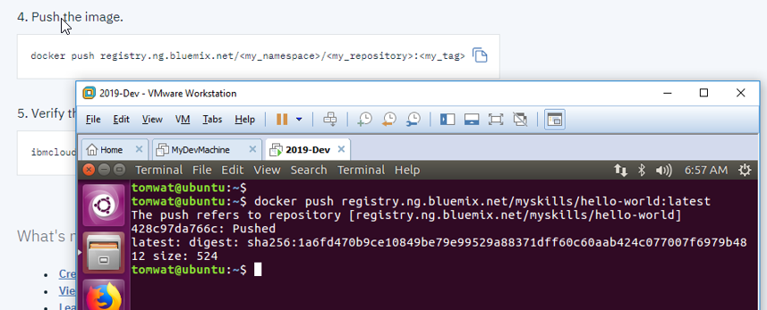

https://console.bluemix.net/containers-kubernetes/registry/main/start
Create a new namespace in the registry.
$ ibmcloud cr namespace-add myskills
Log your local Docker daemon into the IBM Cloud Container Registry

$ ibmcloud cr login
Pull a test image
$ docker pull hello-world
Tag the image as appropriate for IBM Cloud Container Registry
$ docker tag hello-world registry.ng.bluemix.net/
Push the image to IBM Cloud CR
$ docker push registry.ng.bluemix.net/
Verify the image was transferred